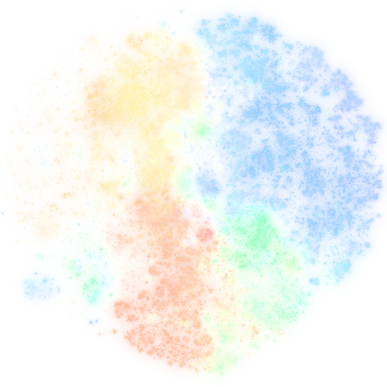

where these studies sit in science · open the map

The map of science: studies about similar things sit close together; colours are fields. Zoom in and every dot is a study: tap one to see which. Scroll or pinch to zoom, drag to move.
builds on same conversation read next this study
Every paper already made readable. They open instantly.
Ask in your own words · finds papers by meaning
Or look for exact words · click to try
Have a DOI or a PubMed Central ID (PMC…)? Paste it to open that paper.
✦ This rewrite was free for you, but it ran on a real graphics card. If it helped, you can chip in to keep it running.